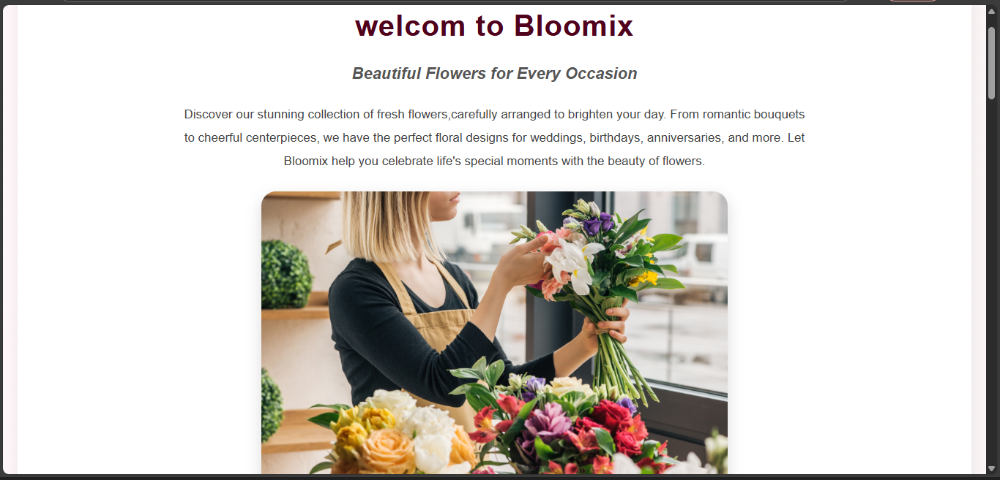
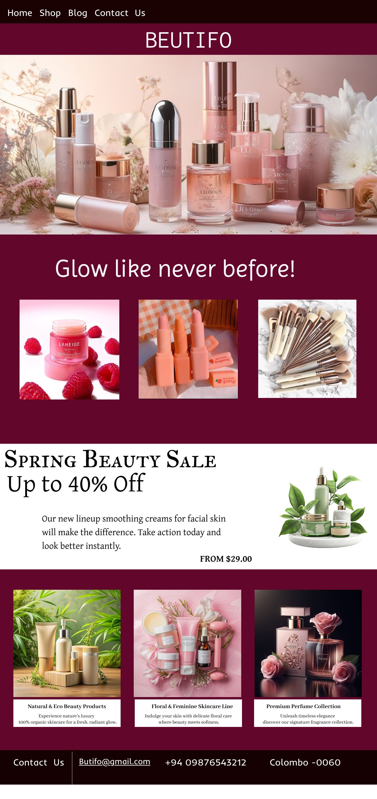
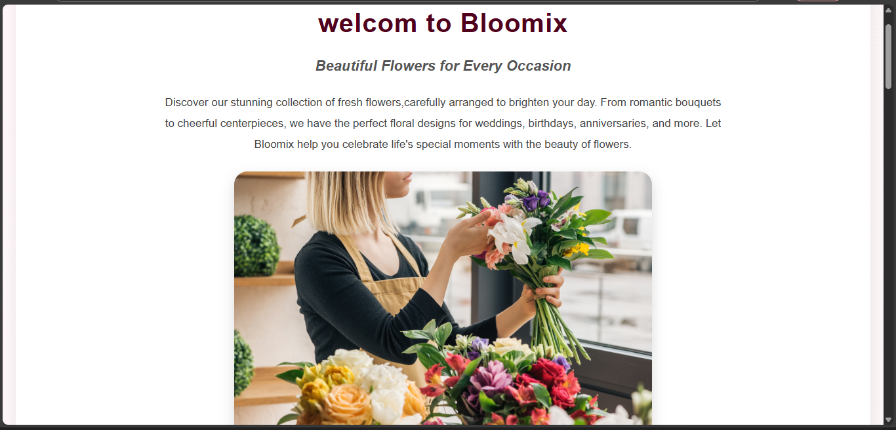
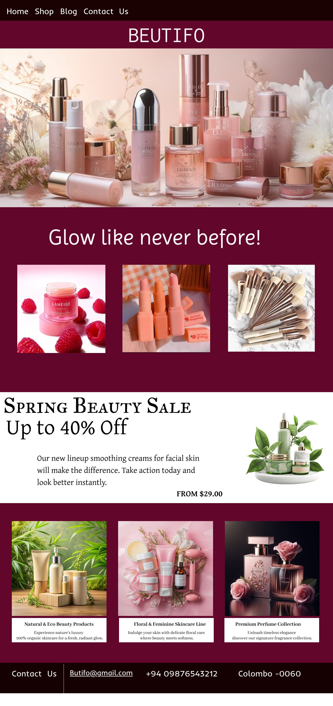

Hi, I’m an enthusiastic and motivated Software Engineering student at SLIATE, currently pursuing my Higher National Diploma in IT. I have a strong interest in web development, UI/UX design, and software engineering. I’m a fast learner, passionate about solving problems, and always eager to grow through hands-on experience and real-world challenges.


 


